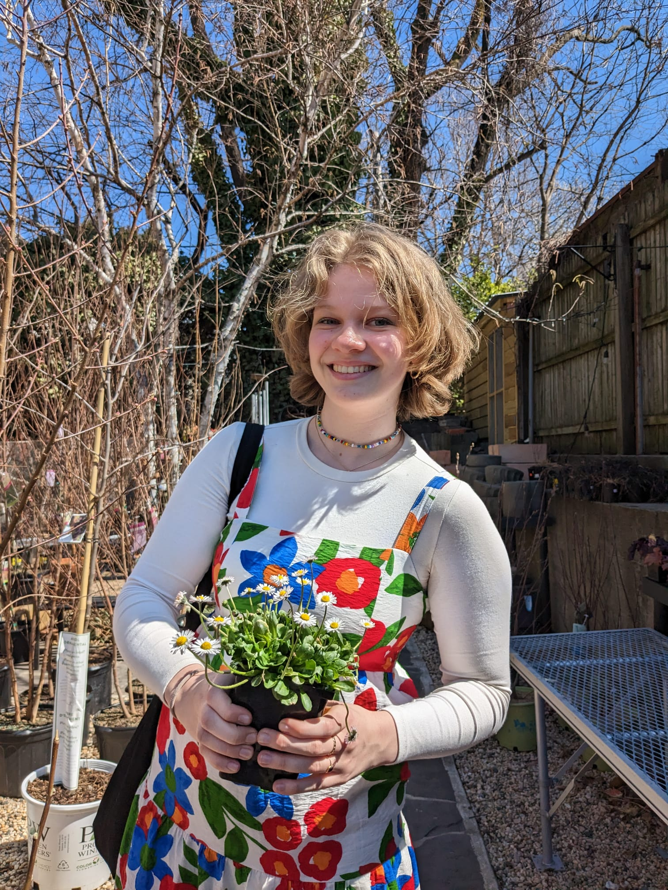

About Me
Hi, I'm Fanny, a UX designer dedicated to creating simple, creative solutions that everyone can use. With a background in environmental studies, I design with sustainability and accessibility in mind.
Before taking my first computer science class at Brown, I had never thought to program. I really struggled in the following CS classes as well, finding it hard because some people seemed to be good at programming effortlessly while I had to put in more hours and work. However, this experience has given me a solid understanding of the struggles you can face in understanding CS, which has made it much easier to collaborate with individuals who are not CS-trained.
My design philosophy is to be very transparent and simple. I strive to create designs that are accessible to everyone, regardless of their expertise level or other impairments. This approach ensures that technology can be inclusive and usable by a diverse range of people.
Professional Experience
Community Driven Coastal Climate Research and Solutions (3CRS), UTRA recipient
New England | October - present
- Conducted community workshops to gather qualitative data on residents' expectations for coastal resilience to climate change.
- Analyzed data to identify trends and opportunities for coastal resilience, contributing to broader NSF-funded research projects. Utilized statistical analysis and qualitative coding techniques to extract key insights from workshop data.
- Spearheaded a mapping project using GIS to identify hazard resilience lifelines and measures of habitability in Rhode Island and Maine, utilizing the Ocean State Spatial Database (OSSDB) and gaining proficiency in ArcGIS Pro and QGIS.
Student Researcher & Conference Organizer, Conference of All Life
Brown | September 2023 – present
- Collaborating on organizing a simulated climate negotiation involving up to 200 participants, including students, staff, faculty, and alumni, to address structural dysfunction in climate negotiations and explore the rights of nature.
- Designed negotiation materials and facilitated workshops to engage participants in exploring interdependence and complicating traditional frameworks in political ecology, resulting in a uniquely theatrical and experiential learning experience.
- Led research efforts to investigate the underlying frameworks operating beneath the biodiversity crisis and its proposed solutions, including developing research questions and data gathering methods, to better understand the socio-political implications of framing the climate crisis.
CareerLAB (Careers in the Common Good), Intern
Providence, Rhode Island | June and July 2023
- Built interactive data visualizations as a tool for students to use on the official CareerLAB website.
- Worked on Tableau to build 10+ visualizations that represent the various data through storytelling.
- Created and coordinated team reflections for future visualization and data work for the CareerLAB. Collected and processed feedback to support the process.
YEP (Youth Empowerment and Participation), Intern
Vienna, Austria | March and May 2022
- Organized and cleaned up data from surveys with +2000 answers. Analyzed and curated results of these surveys for synthesized reports.
- Identified correlations between factors that affect youth engagement observed from data provided by YEP research projects and presented findings of the research to both the Austrian Ministry of Education and Health, as well as at the Erste Startup Competition.
- Led and supported several youth projects and organized events for the YEP community. Created and edited content for several social media platforms and the official YEP website.
Education
I am earning a degree in Environmental Studies from Brown University, where I also completed several courses in computer science and design.
- Bachelor of Arts in Environmental Studies, Brown University
- Courses in Computer Science and Design
Personal Interests
When I'm not working, I enjoy exploring my other interests:
- Dancing
- Cooking
- Reading
- Hiking and nature conservation